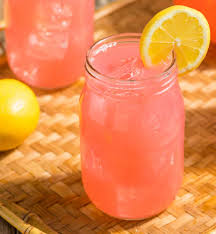

Red Punch Lemonade

Description
In Texas, Big Red is a bottled soft drink also called “red soda water.” This red cream soda is often served at Juneteenth celebrations. This punch recipe is easy to make and offers a new, puckering and pleasing twist to the traditional red soda water that has been made in Texas since 1937.
Ingredients
- 2 cups sliced fresh or frozen strawberries
- 1/2 cup sugar
- 1 cup fresh-squeezed lemon juice (from about 8 lemons) or 1 (12-ounce) can lemonade concentrate, thawed
- 7 cups cold water
- ice, as needed
Steps
- Gather all ingredients.
- Add strawberries, sugar, lemonade concentrate, and water to a blender in that order. Pulse the mixture a few times. Then blend at low speed for 2 minutes. Gradually turn the speed up to medium. Blend until smooth.
- Pour strawberry lemonade into a large pitcher or punch bowl. Serve over ice.
Home